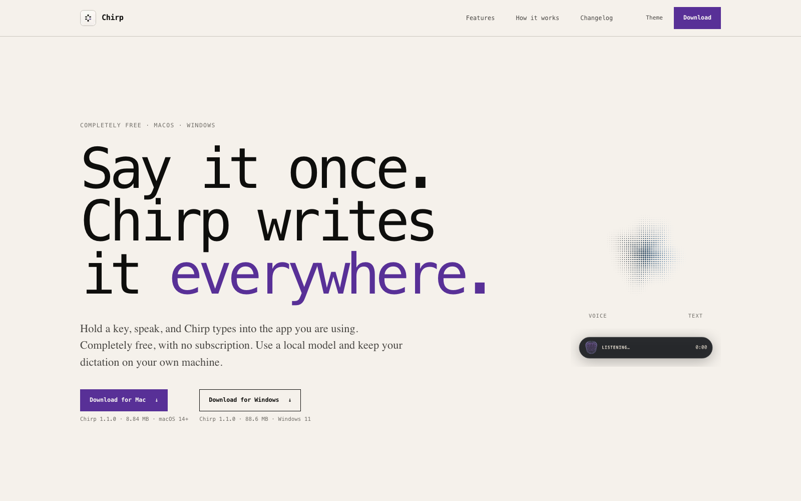

Selected project
01
Chirp
Private speech-to-text for Mac & Windows — free, on-device, no subscription.
Hold a key, speak, and Chirp types into the app you're already using. Whisper and Parakeet models run entirely on your own machine — through Core ML on macOS and natively on Windows — so no transcript leaves the device unless a cloud provider is explicitly connected. No account, no telemetry, no always-on cloud.
It's a native SwiftUI app on macOS and a native WinUI 3 app on Windows — not a web wrapper on either. Dictionary rules, text snippets and cleanup modes shape the words it returns; history and optional API keys stay in the macOS Keychain or Windows Credential Manager. Beyond live dictation: import audio, search local history, replay saved recordings, and export plain text.
v1.1.0 live · 8.84 MB on macOS 14+ / 88.6 MB on Windows 11 · models from ~74 MB · on-device by default
